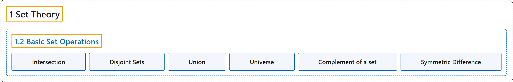

1.2 Basic Set Operations
Classification

Glossary
| Term | Definition | 中文翻译 | Source |
|---|---|---|---|
| 1.2 Basic Set Operations 集合的基本运算 |
(No definition) | （无定义） | Doerr & Levasseur, n.d., section 1.2 |
| Intersection 交集 |
"Let \(A\) and \(B\) be sets. The intersection of \(A\) and \(B\) (denoted by \(A \cap B\)) is the set of all elements that are in both \(A\) and \(B\text{.}\) That is, \(A \cap B = \{x:x \in A \textrm{ and } x \in B\}\text{.}\)" | 设 \(A\) 和 \(B\) 是集合。\(A\) 与 \(B\) 的交集（记作 \(A \cap B\)）是同时属于 \(A\) 和 \(B\) 的所有元素构成的集合。即 \(A \cap B = \{x:x \in A \textrm{ and } x \in B\}\)。 | Doerr & Levasseur, n.d., Definition 1.2.1 |
| Disjoint Sets 不相交集 |
"Two sets are disjoint if they have no elements in common. That is, \(A\) and \(B\) are disjoint if \(A \cap B = \emptyset\text{.}\)" | 两个集合若没有公共元素，则称它们不相交。即，若 \(A \cap B = \emptyset\)，则 \(A\) 和 \(B\) 不相交。 | Doerr & Levasseur, n.d., Definition 1.2.3 |
| Union 并集 |
"Let \(A\) and \(B\) be sets. The union of \(A\) and \(B\) (denoted by \(A \cup B\)) is the set of all elements that are in \(A\) or in \(B\) or in both A and B. That is, \(A\cup B= \{x:x \in A\textrm{ or } x\in B\}\text{.}\)" | 设 \(A\) 和 \(B\) 是集合。\(A\) 与 \(B\) 的并集（记作 \(A \cup B\)）是属于 \(A\) 或属于 \(B\) 或同时属于 \(A\) 和 \(B\) 的所有元素构成的集合。即 \(A\cup B= \{x:x \in A\textrm{ or } x\in B\}\)。 | Doerr & Levasseur, n.d., Definition 1.2.4 |
| Universe 全集 |
"The universe, or universal set, is the set of all elements under discussion for possible membership in a set. We normally reserve the letter \(U\) for a universe in general discussions." | 全集，或称论域，是为了判断某集合可能包含哪些元素而讨论的所有元素构成的集合。在一般讨论中，我们通常用字母 \(U\) 表示全集。 | Doerr & Levasseur, n.d., Definition 1.2.6 |
| Complement of a set 集合的补集 |
"Let \(A\) and \(B\) be sets. The complement of \(A\) relative to \(B\) (notation \(B - A\)) is the set of elements that are in \(B\) and not in \(A\text{.}\) That is, \(B-A=\{x: x\in B \textrm{ and } x\notin A\}\text{.}\) If \(U\) is the universal set, then \(U-A\) is denoted by \(A^c\) and is called simply the complement of \(A\text{.}\) \(A^c=\{x\in U: x\notin A\}\text{.}\)" | 设 \(A\) 和 \(B\) 是集合。\(A\) 相对于 \(B\) 的补集（记作 \(B - A\)）是属于 \(B\) 但不属于 \(A\) 的元素构成的集合。即 \(B-A=\{x: x\in B \textrm{ and } x\notin A\}\)。若 \(U\) 是全集，则 \(U-A\) 记作 \(A^c\)，简称为 \(A\) 的补集。\(A^c=\{x\in U: x\notin A\}\)。 | Doerr & Levasseur, n.d., Definition 1.2.10 |
| Symmetric Difference 对称差 |
"Let \(A\) and \(B\) be sets. The symmetric difference of \(A\) and \(B\) (denoted by \(A\oplus B\)) is the set of all elements that are in \(A\) and \(B\) but not in both. That is, \(A \oplus B = (A \cup B) - (A \cap B)\text{.}\)" | 设 \(A\) 和 \(B\) 是集合。\(A\) 与 \(B\) 的对称差（记作 \(A\oplus B\)）是属于 \(A\) 或 \(B\) 但不同时属于两者的所有元素构成的集合。即 \(A \oplus B = (A \cup B) - (A \cap B)\)。 | Doerr & Levasseur, n.d., Definition 1.2.15 |
References
Doerr, A., & Levasseur, K. (n.d.). Applied discrete structures. Retrieved October 28, 2026, from https://discretemath.org/ads/index-ads.html